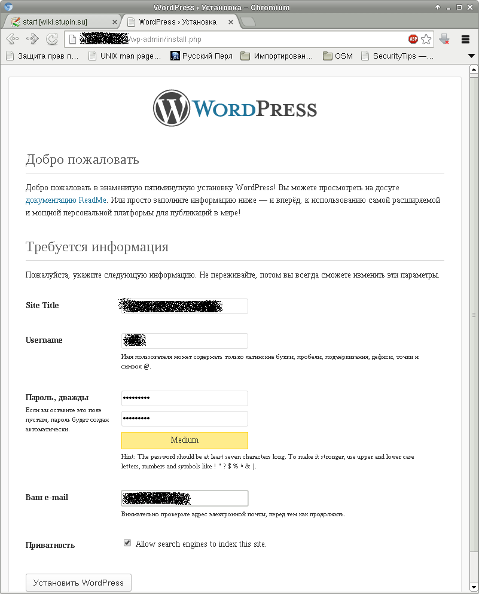
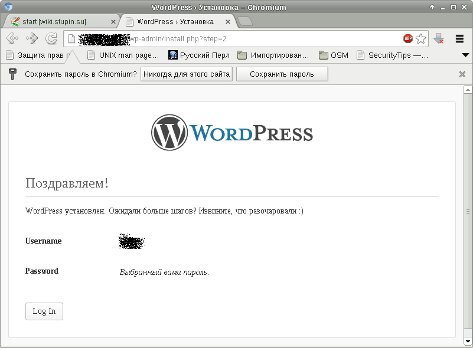

Пока не о чем писать, достану из закромов немного тривиальщины.
Wordpress будет работать под управлением веб-сервера Lighttpd и будет использовать базу данных в MySQL. Сам Wordpress написан на PHP. Перед тем как устанавливать сам Wordpress, установим необходимые пакеты, если они ещё не были установлены:
# apt-get install mysql-server mysql-client lighttpd php5-cgi
Ставим пакет с wordpress и пакет с локализациями:
# apt-get install wordpress wordpress-l10n
Смотрим, что есть полезного в пакете wordpress, что может помочь в настройке сервера:
$ dpkg -L wordpress
Я отметил три момента:
Меня заинтересовал вариант настройки "defined Virtual host" и я подготовил файл /etc/lighttpd/conf-enabled/50-wordpress.conf с таким содержанием:
$HTTP["host"] == "blog.domain.tld" {
server.document-root = "/usr/share/wordpress"
alias.url += ( "/wp-content" => "/var/lib/wordpress/wp-content" )
$HTTP["url"] =~ "^/" {
server.follow-symlink = "enable"
}
}
Осталось включить модули fastcgi, fastcgi-php, новоиспечённый нами "модуль" wordpress и перезапустить веб-сервер:
# lighty-enable-mod fastcgi fastcgi-php wordpress # /etc/init.d/lighttpd restart
На данный момент уже можно зайти в блог, однако будет выведено сообщение, что он ещё не настроен.
Для настройки блога скопируем заготовку настроек в файл /etc/wordpress/config-blog.domain.tld.php:
# cp /usr/share/wordpress/wp-config-sample.php /etc/wordpress/config-blog.domain.tld.php
Зададим настройки подключения к базе данных:
define('DB_NAME', 'database');
define('DB_USER', 'user');
define('DB_PASSWORD', 'blog_password');
Обычно для пользователей, которые не будут вводить пароль вручную, я генерирую случайный пароль длиной 16 символов при помощи программы pwgen, которую можно установить из одноимённого пакета:
$ pwgen 16
Сгенерированный пароль можно использовать вместо blog_password в примере выше.
Укажем, что таблицы блога blog.domain.tld должны иметь префикс blog_:
$table_prefix = 'blog_';
Пропишем русский язык в настройки блога:
define('WPLANG', 'ru_RU');
Посмотреть, какие языки поддерживаются можно в пакете wordpress-l10n такой командой:
$ dpkg -L wordpress-l10n
Если там есть файл с расширением mo, то его имя можно прописать в настройки.
Осталось создать базу данных и пользователя. Для этого подключаемся к базе данных с правами администратора:
$ mysql -uroot -p mysql
Создадим базу данных:
CREATE DATABASE blog CHARSET UTF8;
Создадим пользователя, от имени которого движок блога будет подключаться к базе данных, а вместо blog_password подставим сгенерированный пароль:
INSERT INTO user(user, password, host) VALUES('blog', PASSWORD('blog_password'), 'localhost');
FLUSH PRIVILEGES;
Дадим новому пользователю права на полный доступ к базе данных:
GRANT ALL ON blog.* TO blog@localhost; FLUSH PRIVILEGES;
Для окончательной настройки блога нужно перейти по ссылке http://blog.domain.tld/wp-admin/install.php и заполнить форму с информацией о блоге и учётными данными его администратора:
После отправки данных откроется страница следующего вида:
На этом настройка блога почти закончена. Осталось лишь выбрать и установить подходящую тему и, при необходимости, установить полезные плагины.
Я подготовил несколько deb-пакетов с темами и плагинами к Wordpress и поместил их в собственный репозиторий.
Чтобы подключить репозиторий, можно добавить его в файл /etc/apt/sources.list:
deb http://stupin.su/debian/ wheezy main
Обновим список пакетов в репозиториях:
# apt-get update
Теперь можно установить из репозитория любой из имеющихся пакетов:
На этом пока всё.